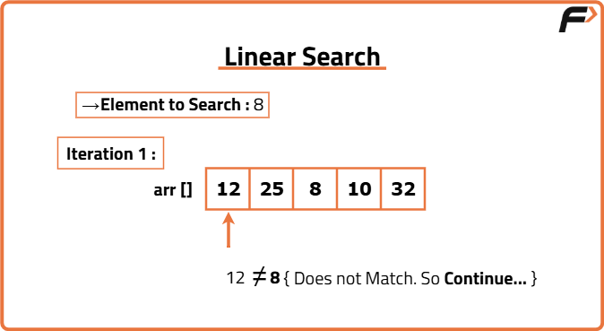
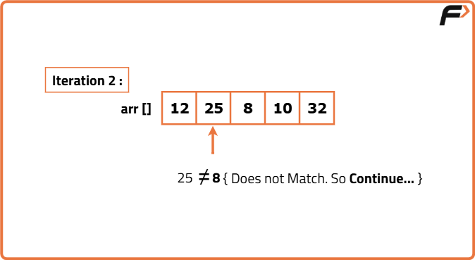
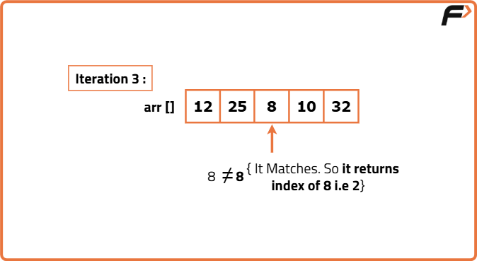

Linear Search in C
Problem Statement: Given an array, and an element num the task is to find if num is present in the given array or not. If present print the index of the element or print -1.
Examples
Example 1: Input: arr[] = 1 2 3 4 5, num = 3 Output: 2 ` Explanation: 3 is present at the 2nd index of the array. Example 2: Input: arr[] = 5 4 3 2 1, num = 5 Output: 0 Explanation: 5 is present at the 0th index of the array.
Disclaimer: It's highly recommend trying to solve it before looking at the solution.
Approach
Algorithm
- Given an array, traverse through the entire array.
- For each element, check if the element is present in the array.
- If the element is found, print the index of the element.
- If the element is not found, print -1.



Code
#include<stdio.h>
// Function to search for a number in the array
int search(int arr[], int n, int num)
{
int i;
// Loop through the array to find the number
for(i = 0; i < n; i++)
{
// If the current element matches the number, return its index
if(arr[i] == num)
return i;
}
// If the number is not found, return -1
return -1;
}
int main()
{
// Declare and initialize the array
int arr[] = {1, 2, 3, 4, 5};
// Number to search for
int num = 4;
// Calculate the number of elements in the array
int n = sizeof(arr) / sizeof(arr[0]);
// Call the search function and store the result
int val = search(arr, n, num);
// Print the index of the found number or -1 if not found
printf("%d", val);
return 0;
}Complexity Analysis
Time Complexity: O(N), where N is the number of elements in the array. This is because we traverse the entire array to find the element.
Space Complexity: O(1), as we are using a constant